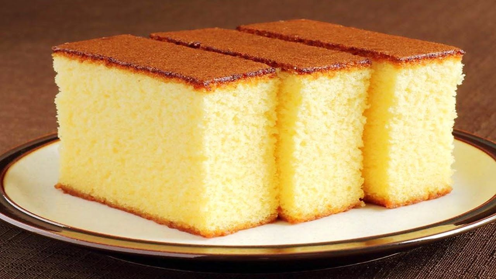

Butter Cake

Description:
A butter cake is a cake in which one of the main ingredients is butter.
Butter cake is baked with most basic ingredients: butter, sugar, eggs, flour,
and leavening agents such as. It is considered as one of the quintessential
cakes in American baking. Butter cake originated from the English pound cake,
which traditionally used equal amounts of butter, flour, sugar, and eggs to
bake a heavy, rich cake.
Ingredients:
- 1 cup unsalted butter
- 1 cup castor sugar
- 5 eggs
- 1 3/4 cups cake flour or all purpose flour
- 1/2 tsp baking powder
- 1/4 cup milk
- 1 tsp vanilla extract
Directions:
- Preheat oven at 160 °C
- Sift the flour and baking powder. Set aside.
- Mix butter and sugar on low speed for two minutes or until sugar disappears.
Then increase to medium speed and mix for 15 minutes. One of the keys to
this butter cake, these 2 ingredients must be mixed well. Continue mixing
until the butter is white, light and fluffy. You will see that in about
15 minutes.
- Add in the eggs, one by one. Mix until the yellow eggs disappear.
- Add in the sifted dry ingredients spoon by spoon. This is another key to
make good butter cake.
- Add the milk and vanilla extract. Continue mixing for another 3-5 minutes.
- Pour the batter into the baking pan. Bake at 160°C for 55-60 minutes.
Return to top
Return to Main Menu